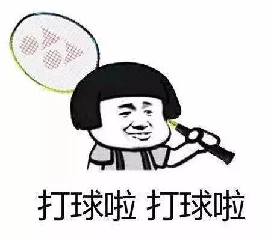

学校背景
广东建设职业技术学院是公办全日制普通专科院校，是全国有色金属行业职工继续教育基地、国家级岭南建筑技术职业教育产教创新基地、全国现代学徒制工作专家指导委员会主任委员单位、全国现代学徒制试点单位。
学校前身是1979年建校的广东省建筑工程技工学校，1986年改名为广东省建筑工程学校，2001年5月经广东省人民政府批准、教育部备案，升格为高职学校，2006年4月，学校由广东省建筑工程集团有限公司主管正式划转广东省教育厅管理。
广东建设职业技术学院是省内唯一一所公办建筑类高职院，是建筑业高素质技术技能人才培养的主要基地和 “现代鲁班”摇篮。
办学42年来，学校扎根南粤大地，服务“一带一路”，培养培训了20多万名高素质技术技能型人才，为广东省建设行业与经济社会发展做出了积极贡献。
学校前身是1979年成立的广东省建筑工程技工学校；1986年成立的广东省建筑工程学校；2001年5月经广东省人民政府批准、教育部备案，升格为高职学校。2006年4月，学校由广东省建筑工程集团有限公司主管正式划转广东省教育厅管理。
个人介绍
姓名:xxx，男
在大学期间，我始终以提高自身的综合素质为目标，以自我的全面发展为努力方向，树立正确的人生观、价值观和世界观。为适应社会发展的需求，我认真学习各种专业知识，发挥自己的特长；挖掘自身的潜力，结合每年的暑期社会实践机会，从而逐步提高了自己的学习能力和分析处理问题的能力以及一定的协调组织和管理能力。
“学而知不足”是我大学期间学习和工作的动力，除了必修课之外，我还坚持自学了Office、Flash、FrontPage、math(仅供参考)等多种专业软件。学习之余，我还不忘坚持参加各种体育活动与社交活动。在思想行为方面，我作风优良、待人诚恳，能较好处理人际关际，处事冷静稳健，能合理地统筹安排生活中的事务。
作为一名2021年的大学生，我所拥有的是年轻和知识。
年轻也许意味着欠缺经验，但是年轻也意味着热情和活力，我自信能凭自己的能力和学识在毕业以后的工作和生活中克服各种困难，不断实现自我的人生价值和追求的目标。
个人能力
在日常工作中，本人自觉端正工作作风，紧系联系群众，经常深入现场检查质量规程标准的执行情况，出现工程质量隐患及时和施工工人交流，提出整改要求。整改到位后，能够及时总结经验，避免出现同样的质量问题。在工作中，做到勤查勤改，及时监督指导，分析质量动态，提供准确数据，推行全面质量管理并督促有关人员做好工程质量的各项原始记录，接受各级质量监督机构对工程质量的监督。对待工程质量问题做到不回避矛盾，不弄虚作假，不以职谋私，不降低标准。在工作中，既获得了各班组的积极配合与支持又得到领导的肯定和表扬。
有扎实的专业功底，做事有条理，能吃苦耐劳，有较强的表达能力和沟通能力，善于与人合作，有团队精神，能快速适应各种环境，有较强的组织能力，勤奋好学，能够认识自己的优缺点努力改正，不断完善自我 踏实认真的学习态度，积极主动的工作作风，热情大方的待人原则，艰苦朴素的生活习惯塑造了我独特的个性和人生追求，培养了我正确的人生观，世界观，价值观，使我能乐观面对生活和工作并取得理想的成绩。
爱好
打羽毛球  适当的学习数学 适当的敲代码
特长
人比较笨
想说的话
百转千轮回，风无散落烟
世中逢尔，雨中逢花
身在无间，心在桃源
天官赐福，百无禁忌